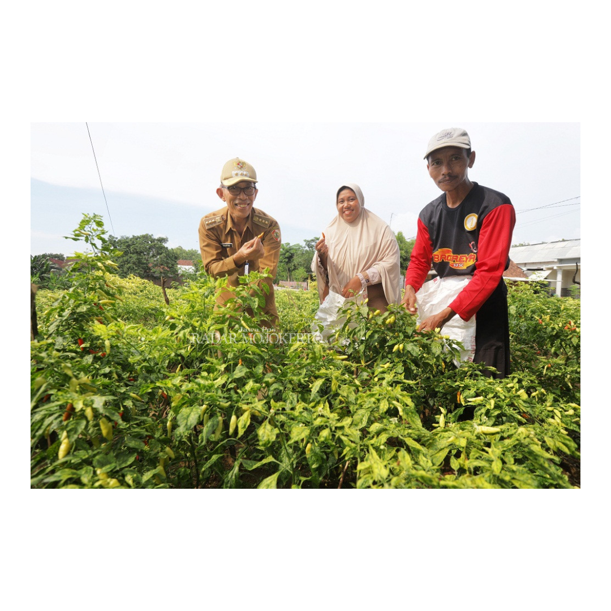

01 · PERTANIAN 🌶️HASIL BUMI UNGGULAN
Pertanian Cabai
Dawarblandong memiliki potensi pertanian cabai yang menjadi salah satu sumber penghidupan masyarakat. Hasil panen cabai turut mendukung perekonomian warga dan memenuhi kebutuhan pasar.
Kenali potensinya →